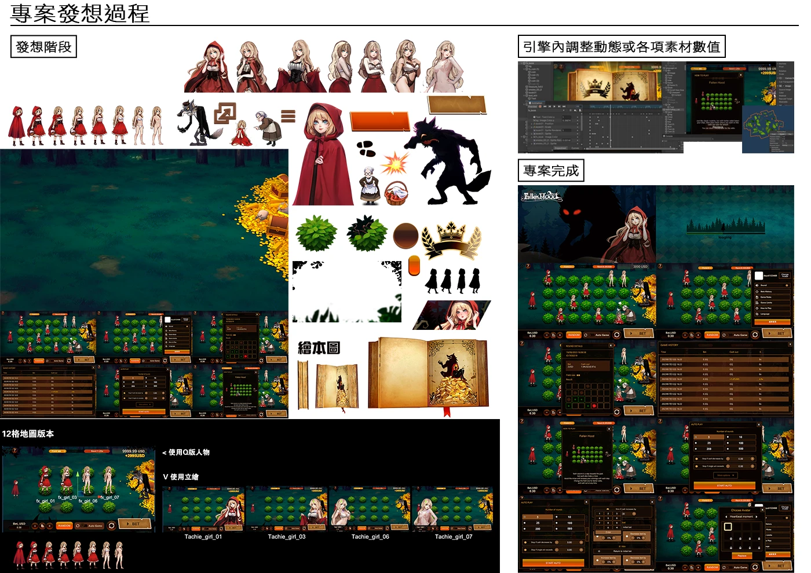
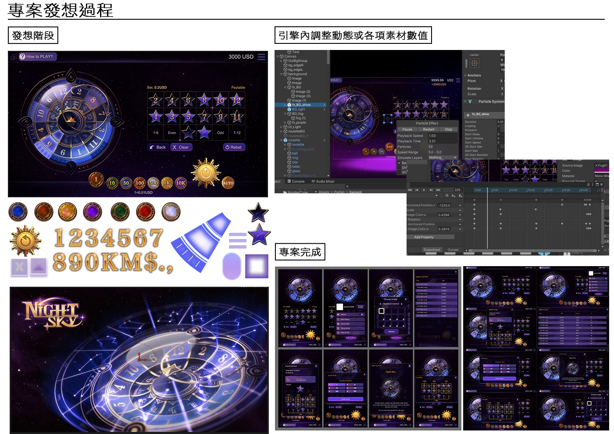
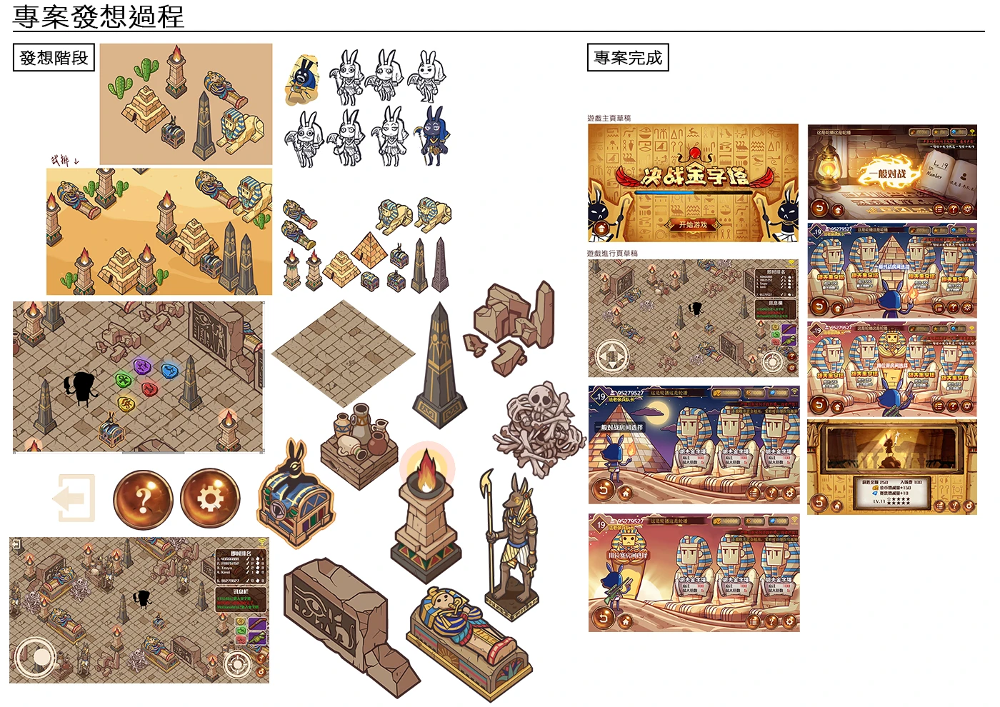
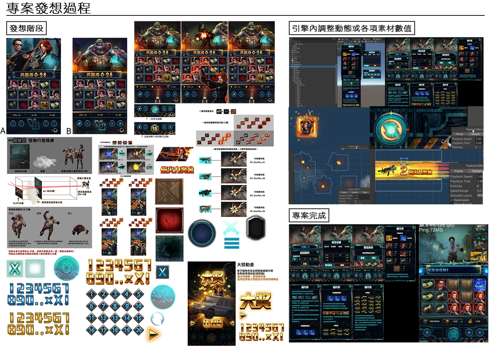

▼ 小紅帽專案發想流程

從開新專案＞與企劃討論美術風格＞UI角色等素材設計＞拆圖分類導入引擎＞引擎內效果補充及套用（簡易粒子或時間軸動畫）＞與前端討論同步修改＞專案上線
▼ 星座轉盤專案發想流程

從開新專案＞與企劃討論美術風格＞UI角色等素材設計＞拆圖分類導入引擎＞引擎內效果補充及套用（簡易粒子或時間軸動畫）＞與前端討論同步修改＞專案上線
▼ 金字塔專案發想流程

新專案發想＞與企劃討論美術風格＞UI角色等素材設計、拆素材＞與前端討論需求
▼ 喪屍SLOT專案發想流程

從開新專案＞與企劃討論美術風格＞UI角色等素材設計＞拆圖分類導入引擎＞引擎內效果補充及套用（簡易粒子或時間軸動畫）＞與前端討論同步修改＞專案上線